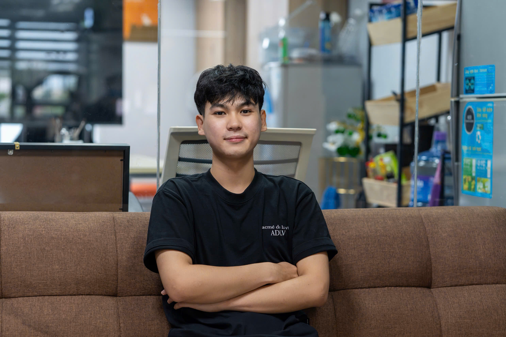

ĐỒ ÁN & DỰ ÁN CÁ NHÂN
Ứng dụng kiến thức AI vào bài toán thực tế
Phát triển các dự án về Computer Vision, dự đoán rủi ro bệnh lý và chatbot doanh nghiệp tích hợp LLM, SQL và RAG.
Xin chào, tôi là
Focused on building practical AI applications using Machine Learning, LLM, RAG and modern AI technologies.
Chào bạn! Tôi là Vũ, sinh viên năm 4 chuyên ngành Trí Tuệ Nhân Tạo tại Trường Đại học Bình Dương.
Mục tiêu của tôi là áp dụng sức mạnh của AI để giải quyết các vấn đề trong thế giới thực. Tôi đặc biệt hứng thú với lĩnh vực Xử lý Ngôn ngữ Tự nhiên (NLP), Large Language Models (LLMs) và việc tối ưu hóa thông tin qua hệ thống RAG.
Tôi luôn thích học hỏi các công nghệ mới, xây dựng các mô hình và không ngừng cải thiện kỹ năng lập trình của mình.

Đồ án
Hệ thống thị giác máy tính nhận diện và phân loại các biển báo giao thông tại Việt Nam, hỗ trợ hệ thống lái xe an toàn.
Đồ án
Mô hình Predictive Modeling for Disease Diagnosis giúp phân tích dữ liệu y tế và dự đoán rủi ro mắc bệnh, hỗ trợ chẩn đoán sớm.
Đồ án
Ứng dụng Web (Flask) quản lý CRM & Kho hàng. Sử dụng Groq LLM phản hồi qua NLP kết hợp truy vấn cơ sở dữ liệu SQL và truy xuất tài liệu (RAG).
Tập trung phát triển năng lực qua đồ án, tự học công nghệ AI hiện đại và xây dựng các ứng dụng có tính thực tiễn.
ĐỒ ÁN & DỰ ÁN CÁ NHÂN
Phát triển các dự án về Computer Vision, dự đoán rủi ro bệnh lý và chatbot doanh nghiệp tích hợp LLM, SQL và RAG.
TỰ HỌC CHUYÊN SÂU
Không ngừng tìm hiểu cách tích hợp LLM API, thiết kế luồng hỏi đáp với dữ liệu và xây dựng ứng dụng AI bằng Python/Flask.
CÔNG CỤ PHÁT TRIỂN
Sử dụng Git/GitHub, Docker, Jupyter Notebook và cơ sở dữ liệu để hỗ trợ thử nghiệm, phát triển và quản lý dự án.
2023 - Hiện tại
Chuyên ngành: Trí Tuệ Nhân Tạo (Sinh viên năm 4).
Tham gia nghiên cứu và thực hành các môn học chuyên sâu về thuật toán, học máy, và thị giác máy tính.
Open to AI/ML internships and practical AI application projects. Tôi đang tìm kiếm cơ hội để học hỏi, đóng góp và phát triển cùng các sản phẩm AI thực tế.